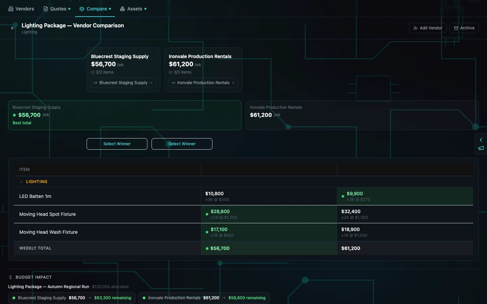

Job — compare the package against the plan
Three lighting categories, two vendors, one visible budget impact
The comparison view puts coverage, weekly totals and the production budget in one decision surface. Each vendor can win individual lines, but no quote is silently accepted and no undecided package turns itself into inventory.
- Both vendors cover all three compared categories
- Per-line best values and weekly totals remain visible together
- Budget impact reports the remaining planning basis for each option
- Select Winner controls keep commercial responsibility with the production
Boundary These are rounded internal-production fixture amounts, not CuePack pricing, an approved purchase order or a financial forecast.

The money and the consequence are visible before anyone chooses. Bluecrest leaves 63,300 dollars of the fixture planning basis; Ironvale leaves 58,800. The green cells identify lower quoted lines, not an automatic purchasing decision.